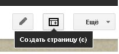
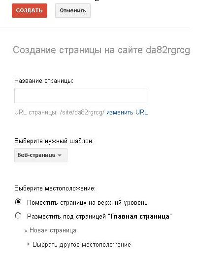
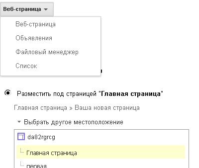
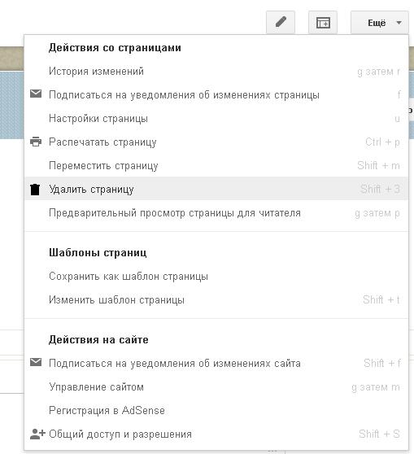
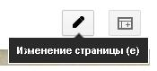
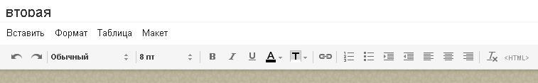
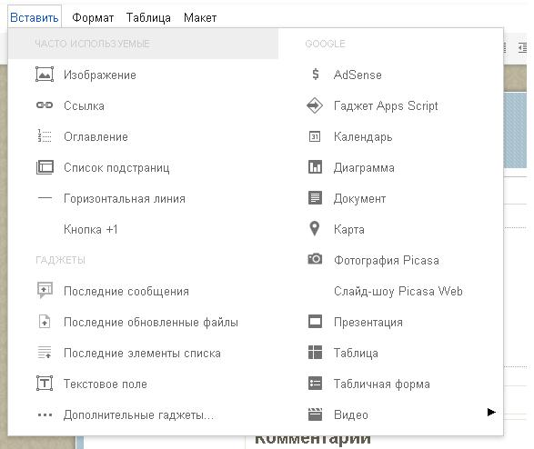

Лекція 3
Дана лекція присвячена основам створеня сторінок веб-сайту, їх редагуванню і наповненню сайта контентом.
Після того як сайт був створений ми можемо увійти до нього ввівши свій логін і пароль, і вибравши сервіс "Сайты". Перший розділ, куди ми потрапили, називається Page Manager. Він дозволяє створювати нові сторінки, копіювати і видаляти їх, а також завантажувати довільні файли на сервер.
Для створення сайту потрібно мати кілька веб-сторінок, як мінімум одну. За створення нових сторінок відповідає пункт Create a new page, при клацанні якого з'являється поле для введення заголовка створюваної сторінки, а також спеціальна кнопка "Создать страницу", при натисканні якої не тільки буде створена сторінка з введеним заголовком, але також буде здійснено перехід в режим її редагування. До речі, заголовки веб-сторінок і тексти на них можна писати і не лише англійською, а і українською мовою, що, безсумнівно, підвищує можливість застосування цього сервісу для наших співвітчизників.
При одночасному відкритті однієї і тієї ж сторінки в редакторі в різних браузерах або на різних комп'ютерах з'явиться повідомлення "Page Locked. This page is being edited in another browser", що попереджає користувача про те, що паралельна правка одного і того ж документа може призвести до спотворення його даних. Якщо є впевненість, що все вірно, слід вибрати пункт Edit anyway, інакше варто повернутися в менеджер сторінок, перейшовши за посиланням Return to the page manager.
Вибравши відповідний пукнт меню можна змінити налаштування сайту: ім'я, включення оптимізації розміру завантажуваних графічних файлів, включення експериментальних можливостей (гаджетів) і прапор, який виставляється у випадку, якщо сайт містить інформацію, небажану для перегляду неповнолітніми, установити загальний доступ до сайту (адже відразу після створення сайт є приватним, це налаштування також можна змінити вибравши відповідну кнопку швидкого доступа у вепхньому меню).
Окремих слів заслуговують експериментальні гаджети. Гаджет - це спеціальна програма, написана на HTML і JavaScript, яка може бути розміщена на будь-якій сторінці і яка, по суті, являє собою якусь гарну штучку: елегантні і, головне, точний годинник, щоденний гороскоп, графік акцій компанії і так далі . Таким чином, веб-майстри можуть розміщувати на своїх сторінках неодноразово написані розробниками веб-програми. При включенні в настройках даної опції на панелі редагування сторінок з'являється нова кнопка із зображенням шматка піци. При виборі місця розміщення гаджета на сторінці і натисканні цієї кнопки з'являється вікно вибору гаджета, вони можуть бути як схвалені Google, так і надані третіми особами, тобто, знаючи посилання на гаджет або написавши свій, можна додати його на власну веб-сторінку. Після вибору гаджета користувачеві залишається тільки визначити необхідні параметри, якщо це потрібно, після чого гаджет буде додано на вказане на сторінці місце.
Висновки:
В данному розділі були розглянуті основи створення сторінок сайту і наповнення їх контентом.

Не варто непокоїтися через створення надмірної кількості сторінок - користувач має повний контроль над процесом: по-перше, у розпорядженні власника сайту знаходиться 100 мегабайт дискового простору, а по-друге, сторінки можна легко видалити. Також можна зберегти сторінку як шаблон і переглянути історію змін.

Користувая також може вибрати тип сторінки, що він створює і рівень її вкладеності.


Для редагування сторінки необхідно вибрати відповідний пункт меню. Редактор дозволяє працювати зі сторінками у режимі WYSIWYG (на зразок форматування сторінок у редакторі Word), а також безпосередньо використовуючи HTML. Необхідно памятати, що після редагування Вам необхідно зберегти результати.


На сайт можна завантажувати різні типи файлів, у тому числі текстові документи, відео та аудіо файли.
